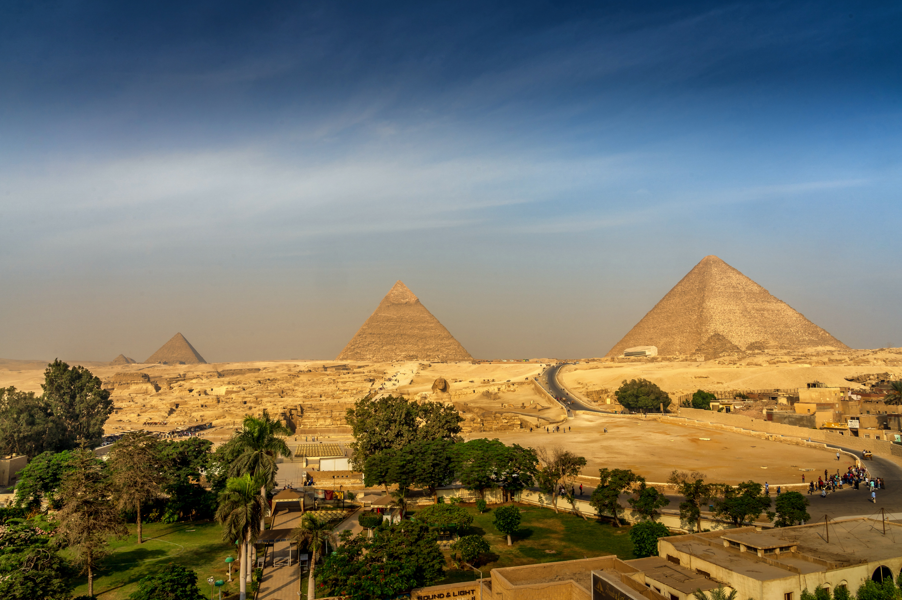
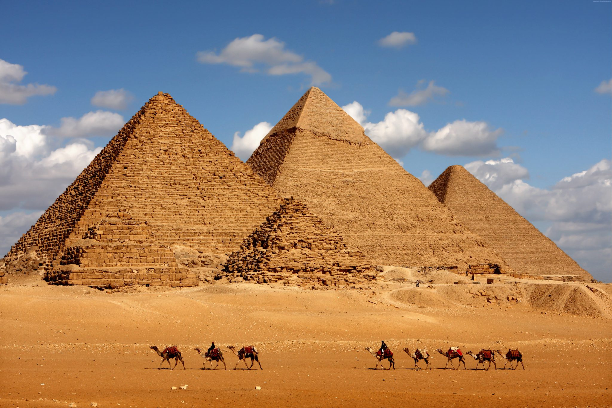

|
Пирамиды Египта
Древнейшие пирамиды
 Пирамида Джосера находится в некрополе Саккары.
Пирамида Джосера находится в некрополе Саккара, рядом с древним городом Мемфисом. Этот некрополь является одним из крупнейших погребальных комплексов в мире, занимая площадь более 10 км.Согласно легенде, Мемфис был основан фараоном Менесом, который объединил Верхний и Нижний Египет более 5000 лет назад. Стратегически расположенный в устье дельты Нила, город служил важным торговым, экономическим и религиозным центром на протяжении всей древнеегипетской истории. Он неоднократно терял и приобретал статус столицы. Спроектирована Имхотепом, одним из самых древних архитекторов в истории.
Преисполненный решимости создать самое впечатляющее сооружение, которое когда-либо видел мир, визирь фараона,Имхотеп, гениально использовал форму мастабы. Он применил новый подход, "уложив" их друг на друга слоями, сформировав "ступенчатую" пирамиду.Пирамида Джосера достигает 62 метров в высоту, а в ее центре находится огромная погребальная шахта глубиной 28 метров и шириной 7 метров. Это было, несомненно, самое высокое сооружение своего времени.

|